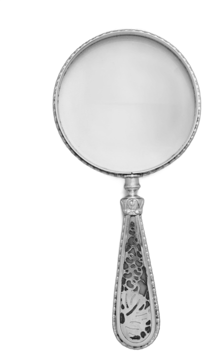

invented by Gosset while testing barley at Guinness, published in 1908 as "Student"
the whole lecture in 4 panels
1. assume innocent (H0)

2. collect evidence (X)
3. would an innocent party do this?
4. in the red zone (α)? convict
"not guilty" ≠ "innocent": failing to reject H0doesn't prove H0.
next: the formulas. then we go to Kapchagay.
the formulas you actually use
Coin-type (count) data
P(X = k) = C(n, k) · pk · (1 − p)n − k add the most extreme outcomes to the rejection region while their total P ≤ α
Standard error
σ known: SE = σ / √n · σ unknown: SE = s / √n
Sample variance
s² = Σ(x − x̄)² / (n − 1)
z-test (σ known)
z = (x̄ − μ0) / (σ / √n) → fence = μ0 ± zcrit · SE
t-test (σ unknown)
t = (x̄ − μ0) / (s / √n), df = n − 1
Critical values
one-sided: z 1.645 (α = .05), 2.326 (.01) · two-sided: ±1.96 (.05), ±2.576 (.01) t with df = 8: 1.860 (one-sided .05), ±2.306 (two-sided .05)
Decision
in the rejection region → reject H0; otherwise → fail to reject (never "accept")
screenshot this one
KAPCHAGAY PROBLEM 1
the stingy slot machine
KAPCHAGAY
WIN ON 20% OF SPINS!*
*trust me bro
the sign says you win on 20% of spins. you play 20 spins and win only once. is the machine tighter than advertised? use α = 0.05.
H0: p = 0.2 · HA: p < 0.2 (one-sided: too few wins) · X ~ Binomial(20, 0.2)
P(0 wins) = 0.820 = 0.012✓ · add 1 win: 0.012 + 0.058 = 0.069 ✗ over 0.05
rejection region = {0}. you won once, so...
fail to reject: you're not cursed, just broke
KAPCHAGAY PROBLEM 2
"95% payback", allegedly
950₸?
870₸
a casino claims its slots pay back 950₸ per 1000₸ bet on average (σ = 200₸). you track 25 sessions: average 870₸. is it paying less? try α = 0.05, then α = 0.01.
H0: μ = 950 · HA: μ < 950 (one-sided) · SE = 200 / √25 = 40 · z = (870 − 950) / 40 = −2.0
α = 0.05: fence = 950 − 1.645 × 40 = 884.2 → 870 is below it → reject H0
α = 0.01: fence = 950 − 2.326 × 40 = 857.0 → 870 is above it → fail to reject
sus at 5%, not proven at 1%
KAPCHAGAY PROBLEM 3
your friend's blackjack "system"
"bro it works, trust"
his 9 nights in Kapchagay (thousand ₸): +5, −4, +8, −6, +6, +4, −3, +7, +1 does the system make money on average? α = 0.05.